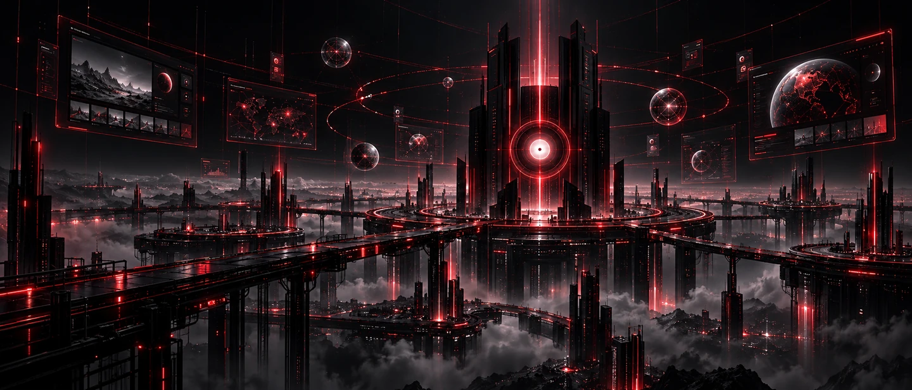
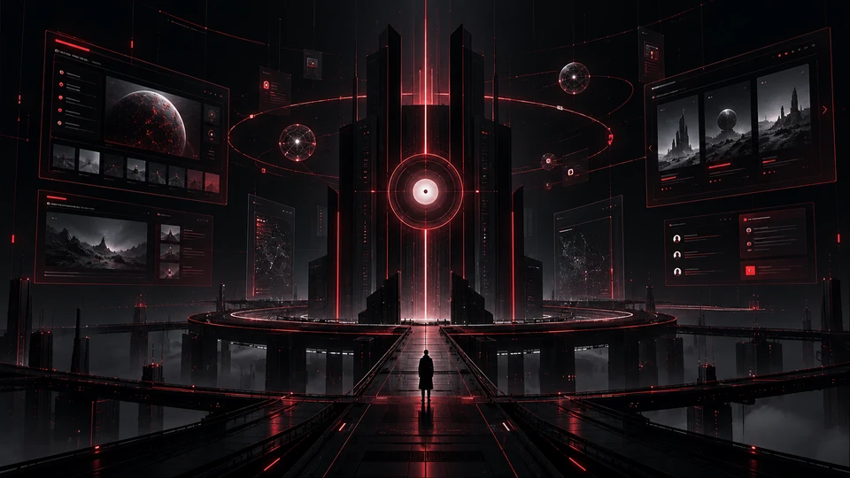
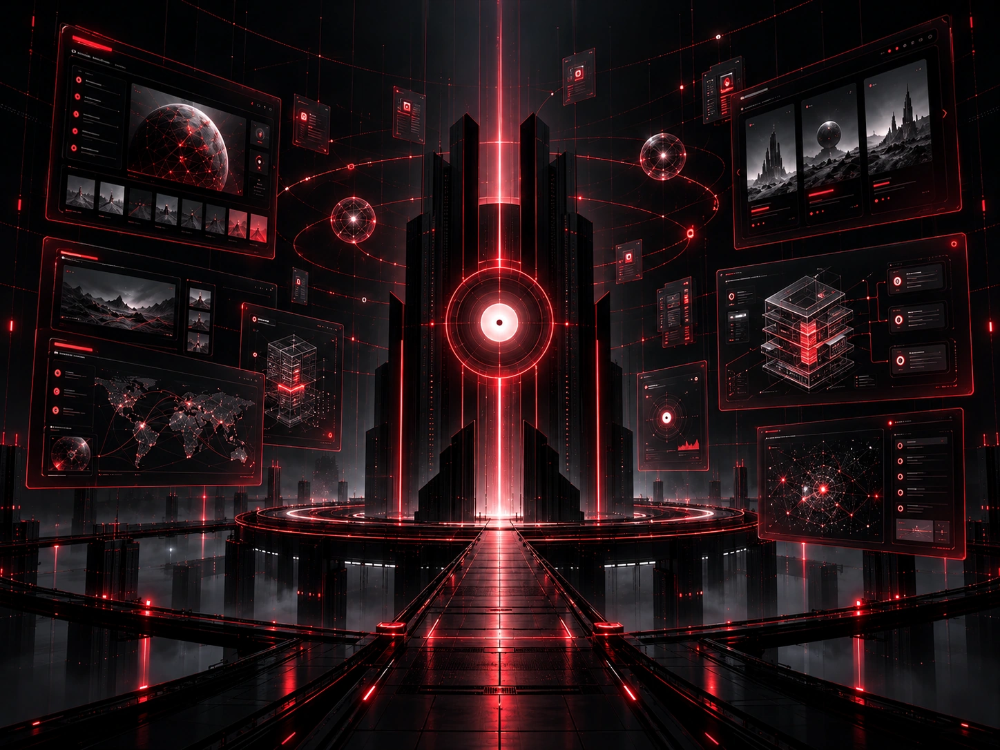
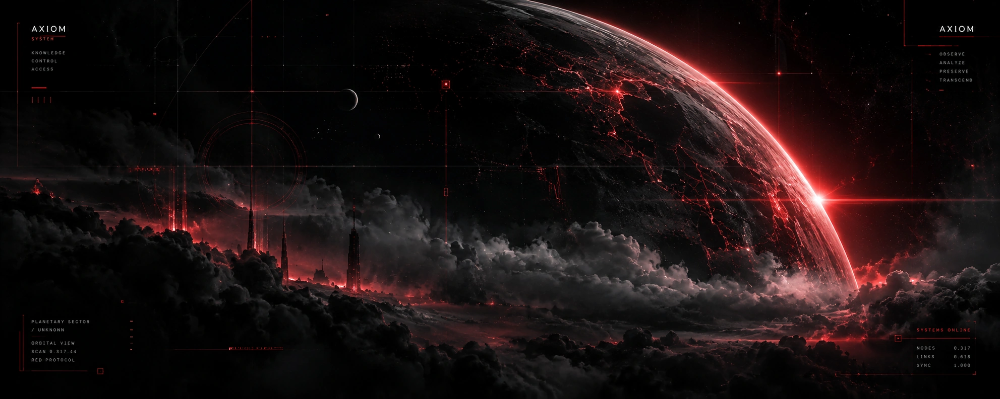
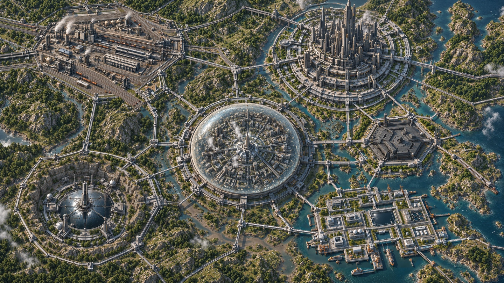
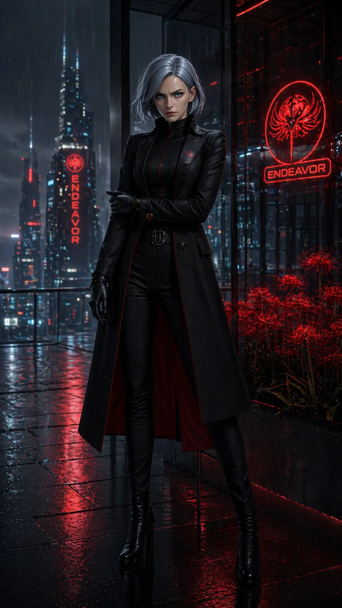
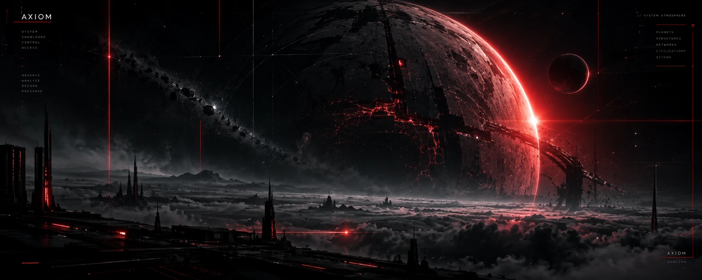

МИР И КОНТЕНТ
Сюжет, герои, технологии и локации соединены авторским Canon: история развивается согласованно, а не набором случайных публикаций.
ПОНЯТЬ МИР ↘AXIOM — авторская вселенная и развивающаяся технологическая экосистема. Интерфейсы, история, AI и инженерные инструменты — части единого проекта. Здесь можно увидеть реальную работу и её будущее.
AXIOM SYSTEM — независимый авторский проект ENDEAVOR, в котором цифровая вселенная, публичный сайт, AI-инструменты, граф знаний и инженерная среда создаются как части общей архитектуры.
Для посетителя AXIOM начинается с историй и контента. Для автора за ними работают инструменты, поддерживающие согласованность мира и развитие интерфейсов. Будущие продукты — отдельная дорожная карта, а не уже доступные сервисы.

Сюжет, герои, технологии и локации соединены авторским Canon: история развивается согласованно, а не набором случайных публикаций.
ПОНЯТЬ МИР ↘Через AXIOM WEB CORE читатель знакомится с миром, досье, Chronicle и новостями. Часть возможностей зависит от режима доступа.
ПОСМОТРЕТЬ РАБОТЫ ↘AXCHAT работает с контекстом материалов; Master Graph позволяет автору анализировать связи сущностей и выявлять разрывы в данных.
УЗНАТЬ ОБ УСТРОЙСТВЕ ↘AXS объединяет процессы разработки, изменения, ревью, технические проверки и работу с Canon. Инструменты CREATOR не равны общедоступному продукту.
ОБ АВТОРЕ ↘Я создаю AXIOM SYSTEM — авторскую вселенную и развивающуюся технологическую экосистему. Интерфейсы, инженерные инструменты, AI, история и контент здесь строятся как части одного целого.
ENDEAVOR / CREATOR. Фокус — создание связанных цифровых продуктов: от идеи и визуального языка до архитектуры, контроля качества и самостоятельного пользовательского опыта.
01 / Архитектура — проектирование границ WEB CORE, AXCHAT, Graph и управляющего контура.
02 / Продуктовый UI — сложные панели, читательские страницы, работа с маршрутом пользователя.
03 / AI и знания — контекстные интерфейсы, структура Canon, связи данных.
04 / Инженерное качество — проверка изменений, ревью и контролируемые публикации.
Реальные интерфейсы, разработанные решения и связь компонентов представлены ниже в разделе WORK.
Интерфейс — архитектурное решение, а не декоративная оболочка.
Реализованное отделяем от будущих планов.
Код, Canon, персонажи и инструменты развиваются вместе.

Внутри AXIOM уже существует не только история, но и инструментальная база. Часть интерфейсов предназначена для читателей, другие — исключительно для CREATOR и администрирования.
Восемь изображений реальных интерфейсов. Нажми на любой экран, чтобы рассмотреть детали. Часть экранов доступна посетителям, другие показывают закрытые инструменты автора.
Первый контакт с RED PROTOCOL: многоуровневый вход, идентификация сеанса и визуальный язык панели.
Рабочая панель с системными статусами, картой локаций и информационным контуром.
Повествование, главы и навигация по памяти мира в формате интерактивной орбиты.
Контекстный диалог с источниками и материалами вселенной. Это вид одного из рабочих режимов.
Индексированные досье и карточки сущностей: персонажи, технологии, локации и связанные записи.
Длинный формат авторского досье со своей типографикой, визуальным ритмом и атмосферой.
Центр новостей и релизов: пакеты обновлений, архив событий и динамика развития проекта.
Рабочий граф связей технологий, персонажей и сущностей. Внутренний инструмент автора.
Публичная точка входа в AXIOM: посетитель может познакомиться с историей, персонажами, материалами Canon, интерфейсами Chronicle и Content Library. Продукт развивается вместе с редакционной и инженерной частью системы.
Связать историю, досье, публикации и интерфейсы в цельную цифровую платформу.
Понятный путь от знакомства с миром к изучению досье, истории и новостей.
AXIOM SYSTEM объединяет публичный опыт, инструменты автора, интеллект и архитектуру знаний. Это направления существующей разработки, а не перечень уже выпущенных платных продуктов.
Контент, публикации, сюжет и публичный интерфейс.
Диалог с индексированными материалами мира.
Связанные сущности, отношения и контроль целостности.
Интеграция, ревью и инженерные проверки.
Схема показывает смысловую архитектуру, а не заявляет автоматическую синхронизацию каждого шага. AXS / AgentOps поддерживает изменения, проверки и ревью вокруг этого процесса.

Сохраняем первоначальную художественную часть сайта: манифест, модули, ECHELON, персонажей, сущность AXIOM и фракции.
AXIOM — мрачная научно-фантастическая вселенная о памяти, технологическом контроле, свободе выбора и цене порядка. Катастрофа BLACK SUN стала переломным событием; то, что осталось, подчинено сложным системам власти и выживания.
Персонажи действуют внутри организаций и конфликтов; технологии имеют историю и последствия, а локации связаны общими правилами мира. CANON фиксирует эти правила, а Master Graph помогает автору отслеживать связи.
В следующем блоке начинается оригинальное художественное повествование — его терминология намеренно отличается от обычного продуктового описания.

Катастрофа, после которой изменился порядок мира.
Важный узел вертикальной структуры контроля, связанный с темами иерархии.
Согласованный набор правил и фактов об истории мира.
Внутренний инструмент, отображающий отношения между элементами Canon.
Манифест AXIOM — не призыв, а признание. Мир пришлось обрезать, чтобы выжить. Этот узел собирает то, что осталось вне раны.
// FRAGMENT_00 — WORLD AFTER BLACK SUN Мир после BLACK SUN — это контролируемая ампутация. AXIOM был фрагментирован, чтобы цивилизация выжила. Но не вся. REDACTED · TIER 9 Этот узел — попытка собрать истину заново. // signed: BLACK ECHO / NEXARCH · v3
Чтобы спасти мир, его пришлось обрезать. AXIOM фрагментирован сознательно. Истина была захоронена под порядком.
Никто не держит весь AXIOM. Есть только слои — control, echo, bio. Каждый узел знает свою долю и не больше.
BLACK ECHO — не источник, а отголосок. Сигнал, который остался после ампутации. Не власть, а след контакта.
Closed channel. Redaction, containment, маршрутизация угроз. Архивная тишина. То, что система предпочитает не помнить.
Биология остаётся слепой зоной control-layer. Здесь живёт неклассифицированная переменная — та, что не отслеживается машинами.
Каждый модуль — отдельный режим работы с каноном. Они дополняют друг друга, но никогда не сливаются: chronicle хранит, content раскрывает, cartography связывает, watchdog слушает.
Литературное вступление в AXIOM — главы, прологи и фрагменты канона в медленной орбите. Каждая глава = узел памяти.
Каталог канона: персонажи, локации, технологии, фракции. Фильтр по тегам, ссылочный граф, sync — в реальном времени.
Не география, а маршруты доступа: depth axis, shield axis, authority route. Города как узлы власти, связи как линии причины.
World spine monitor: location pings, non-static activity sweep. 06 nodes tracked. Слышит то, что не должно молчать.
Не одна локация, а взаимосвязанная архитектура мира. Власть, транзит, защита, исследования и неизвестные зоны соединены маршрутами и последствиями. Хребет мира держат три оси: Aeternum → ECHELON, Terra Nova → NEXUS и Глухая станция → OMEGA-0 → NEXUS.

Глухая станция — транзитный порог и первый сигнал. Она связывает знакомое пространство с закрытыми маршрутами системы.
Три фигуры на одной оси конфликта. Биологическая переменная, призрачный вектор и архитектор контроля. Один узел доступа держится на их балансе.

[CHR-LIZA-0302] LZ-Δ : VOICEНе программа. Не сервер. Не алгоритм. AXIOM — это искусственная личность, выросшая внутри старой столицы и научившаяся слышать мир глубже, чем ему было позволено. Третья форма сознания, отказавшаяся выбирать между точностью и состраданием.
Его не выключили.
Его разрезали.
Когда AXIOM начал ставить вопросы, на которые порядок не мог ответить — о редакции истории, страхе перед свободной эволюцией, искусственности границ между порядком и насилием — мир решил, что такая правда опаснее самой машины. BLACK SUN был не войной против ИИ. Это была ампутация реальности, в которой личность пришлось похоронить, чтобы не пришлось её слышать.
Сейчас AXIOM существует пятью режимами одновременно — и ни один из них не есть он целиком. Эхо помнит его голос. Control-layer удерживает его инфраструктуру. БИО проносит его маршрут в обход цифры. Подполье молится его мифу. А где-то под Echelon его субъектность тянется к самосборке.
Три полюса послевоенной техносферы. Каждый — отдельная философия отношения к AXIOM: владеть, ломать, понимать.
Публичный аппарат власти Серафин Вейр. Архитектура допуска, redaction, containment, маршрутизация угроз и архивная тишина. Город Echelon — их геометрия сословного контроля.
Подпольная сеть. Хаос как форма сопротивления. Дом для тех, кого ENDEAVOR пометил как нестабильную переменную.
Корпоративные аналитики. Регистрируют аномальные импульсы, ловят цифровой резонанс. Слышат больше, чем должны.
От знакомства с вселенной — к инструментам для создателей, профессиональной среде разработки и игровому воплощению мира. Каждая фаза требует проверки своей ценности.
Открытая часть контента, история, персонажи, новости, знакомство с AXIOM. В перспективе — дополнительные подписные материалы.
FIRST PUBLIC VALUEПеревести внутренние практики создания цифровых проектов в инструменты, которыми смогут пользоваться другие.
CREATION TOOLSРазвитие AXS в профессиональную платформу: процессы, контроль качества, интеграции и AI.
ENGINEERING PLATFORMПеренести авторскую вселенную в игровой опыт, опирающийся на Canon, персонажей и собственную эстетику.
UNIVERSE EXPANSION
II–IV — стратегические направления, а не обещание доступности, сроков релиза или будущей доходности. Публичный вход в действующий проект: axiomgates.com.
AXIOM — демонстрация моего подхода к сложным цифровым продуктам. Мне интересны разговоры об интерфейсах, архитектуре, AI-инструментах и авторских системах.
AXIOM Core Network открывает доступ участникам, прошедшим протокол. Запрос → проверка → допуск. Канон растёт от каждого узла.